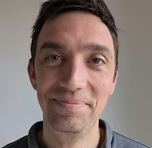
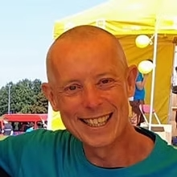
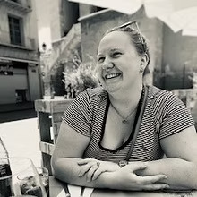
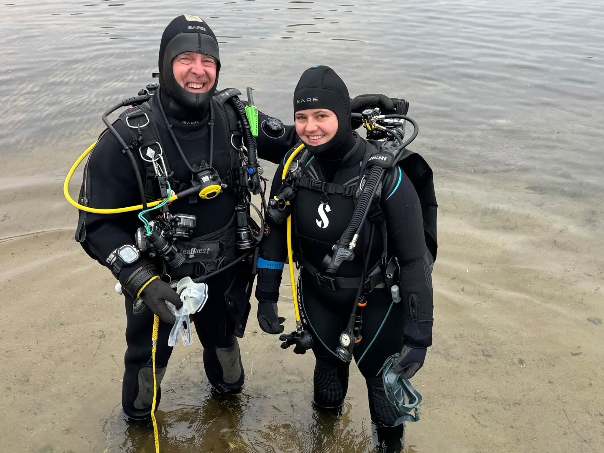
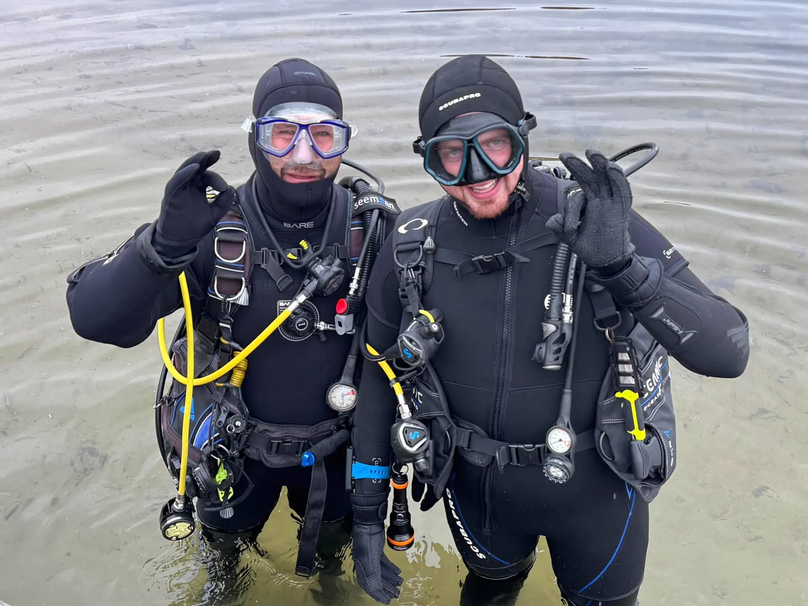

VR
Zwembad
Zwembadtraining
Dinsdag 20u30–22u00 en vrijdag 21u00–22u00 in zwembad Nekkerpool. Gratis initiatie voor nieuwkomers.
Neptunus WVM is een hechte groep duikers en vrijwilligers uit Mechelen en omstreken. Kom gratis proberen en duik mee, je duikt nooit alleen.






Dinsdag 20u30–22u00 en vrijdag 21u00–22u00 in zwembad Nekkerpool. Gratis initiatie voor nieuwkomers.
Zondag omstreeks 10u00, woensdag 14u00–17u00 en donderdag 20u00. Onze thuisbasis in Mechelen.
Elke woensdagavond in juli en augustus, en om de twee weken een clubduik van mei tot oktober.
Jaarlijks langs Vodelée, La Gombe, Floreffe, Rochefontaine en meer, vooral in de winter.
Jaarlijkse clubreis naar de Medes-eilanden aan de Costa Brava, eind september.
Mosselsouper, barbecue en gezellige clubactiviteiten, ook in Zeeland.
Lidgeld 2026–2027. Onder 25 of boven 65? € 50 korting op duikend en beginnend duikend lid.
Lid vanaf 1 januari 2027. Inclusief 1*- en BND-homologatie en een tas met logboek en handboek. Starten in september? € 440.
Schrijf je inZwembad, De Nekker, clubmateriaal op dinsdag, Nelos- en CMAS-lidmaatschap en verzekering.
Schrijf je inEnkel op vrijdag in het zwembad. Zwemmen en trainen in een gezellige groep.
Schrijf je inSteun de club en blijf op de hoogte van wat er gebeurt.
Schrijf je inOok beschikbaar: duikend lid + redder (€ 95) en tweede lidmaatschap (€ 100). Alle tarieven en wat je krijgt →
Bestuur en medewerkers. Zie ook wie waarvoor je aanspreekpunt is.

Na het duiken samen aan tafel: dat hoort erbij.
Nieuwe leden duiken samen met een ervaren buddy.
Kom gratis proberen of bel Jan Pacqué op 0479/99.75.03.